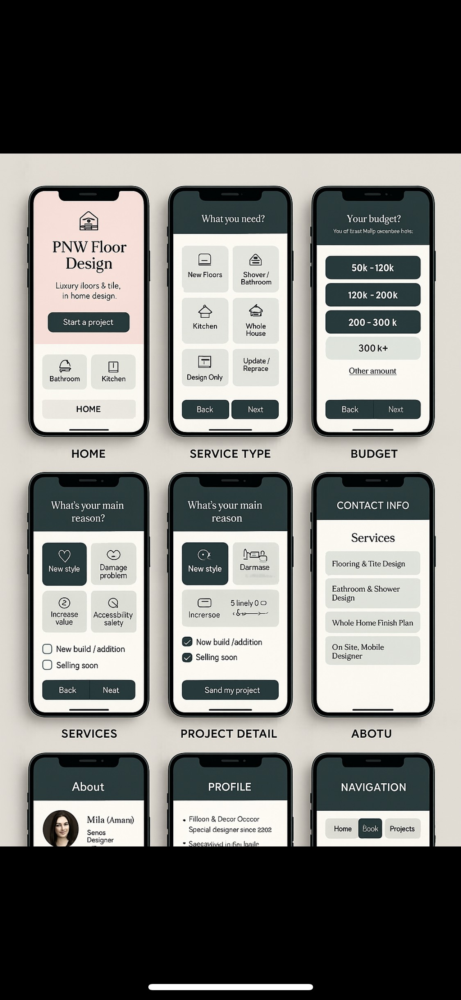
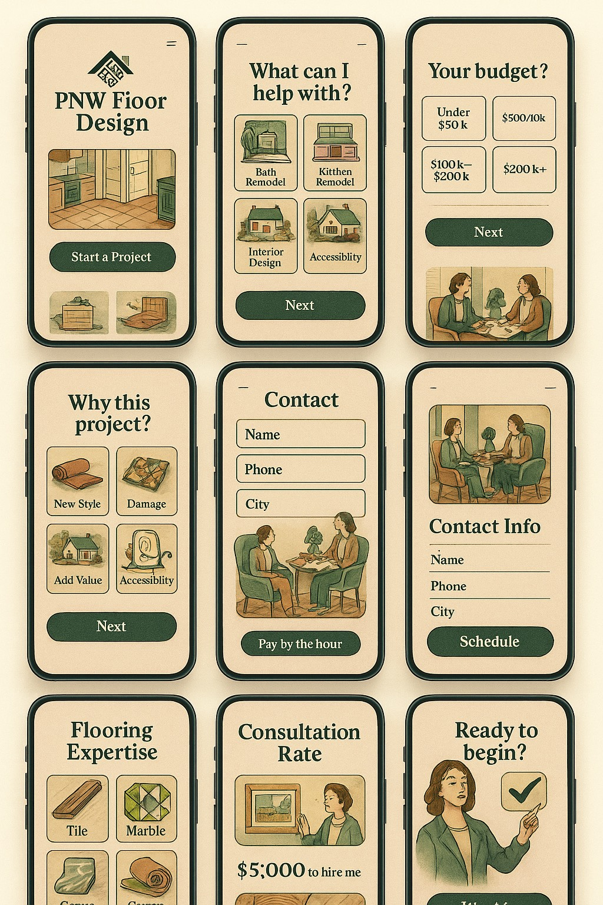

UX / UI Design
Product
Figma
Systems
Product design, design systems, research and prototyping. The newest chapter of my practice, built on top of a decade of physical-world design decisions.
View Work →
Interior & Flooring
Solid Surfaces
Tile
Kitchen + Bath
Ten plus years across solid surfaces, wet areas, tile, kitchen and bath. Project ranges from refresh remodels to multi-million dollar new construction.
View Work →Visual & Photo
Composition
Color
Material
Composition, color, type and material studies. The visual research layer that connects every project I take on, physical or digital.
View Work →